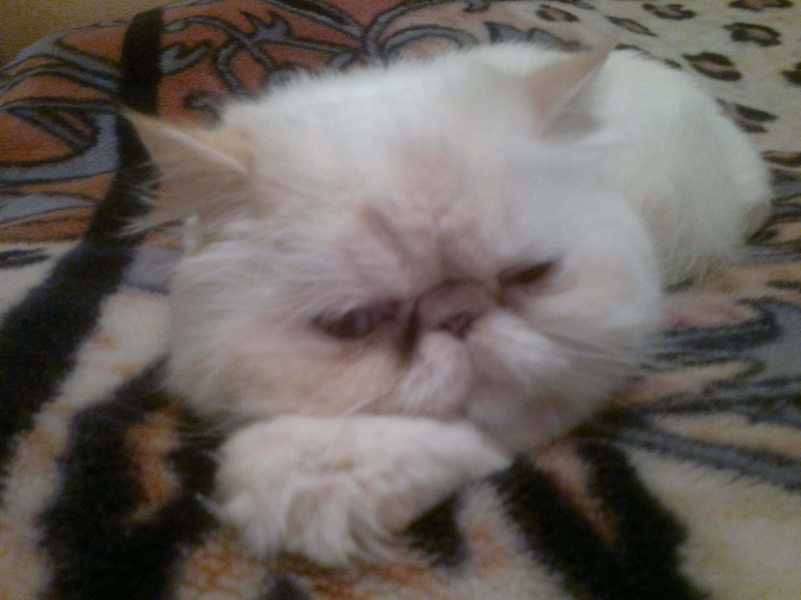
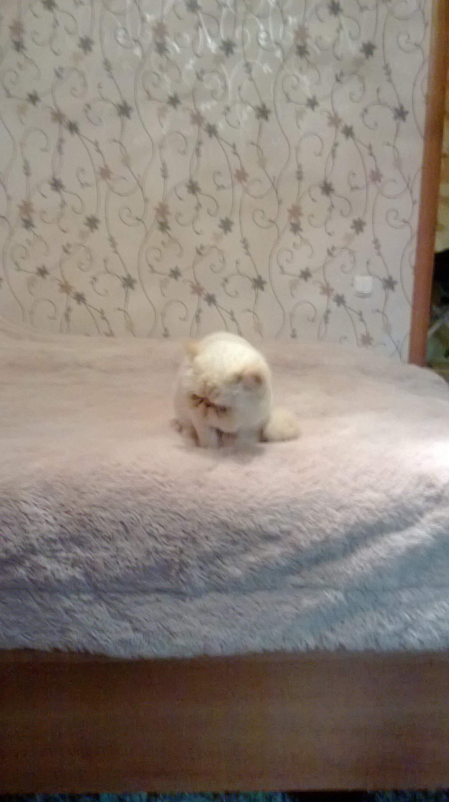

Коты помогают справиться с депрессией, хандрой. Они помогают человеку бороться с грызунами: ловит крыс и мышей.
Моего кота зовут Лёва. Он очень ласковый и умный кот.
 
Существует много пород кошечек. Вот некоторые из них:
Мой кот породы персидская кошка. Больше информации о данной породе кошек можно узнать на сайтах: